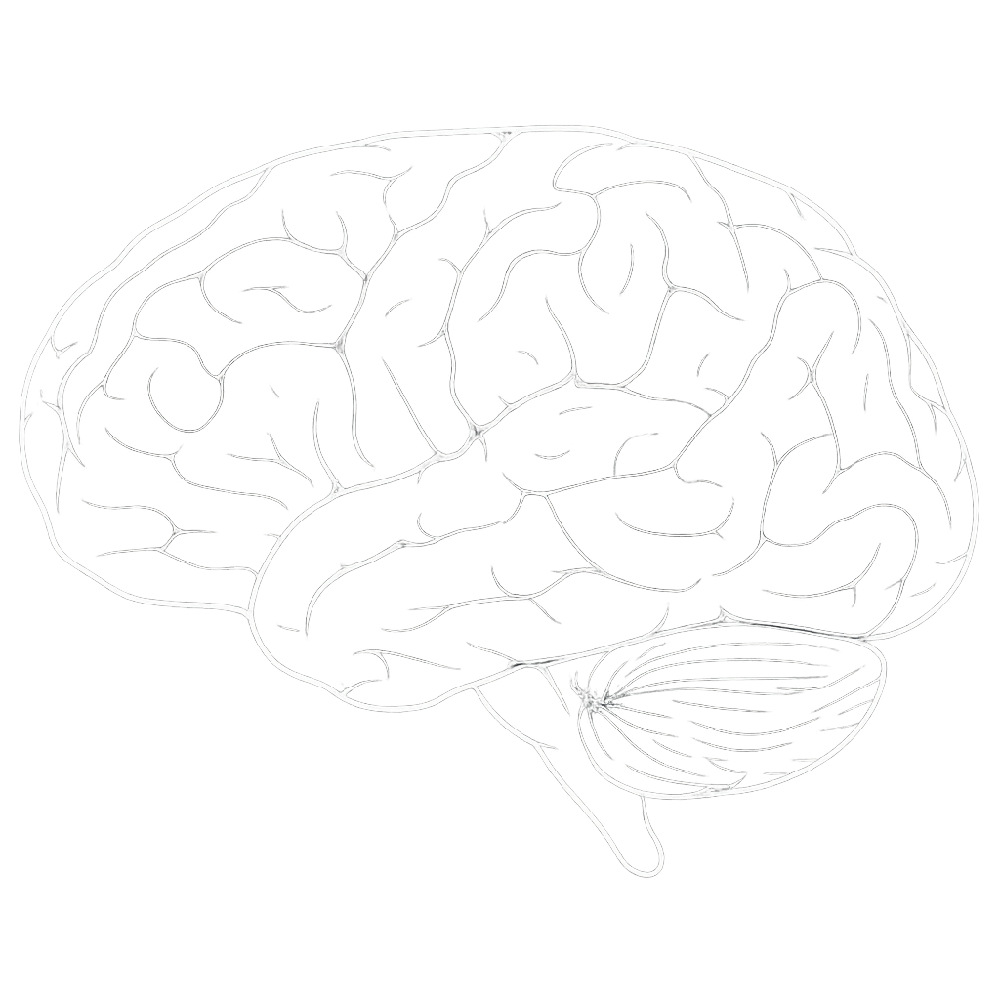

Brain ↔ AI Interactive Map
Welcome to the Brain ↔ AI Interactive Map!
This tool lets you explore how different regions of the human brain inspired the creation of specialized AI models. Just as your brain has areas for vision, movement, planning, and emotion, modern AI uses Large Language Models (LLMs) and other neural networks—each designed to mimic a specific brain function.
Click on any glowing node to see how AI systems were built by learning from the brain's structure and abilities. Discover the science behind vision models, speech recognition, planning, and more!
